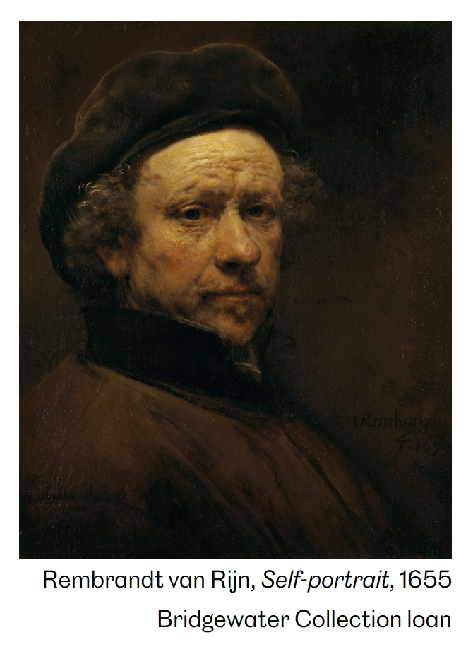

Notes
This work references Rembrandt van Rijn’s Self-Portrait with Beret and Turned-Up Collar.
The painting also references Ace Frehley of the band KISS in his signature makeup.
Ancillary Documentation


This work references Rembrandt van Rijn’s Self-Portrait with Beret and Turned-Up Collar.
The painting also references Ace Frehley of the band KISS in his signature makeup.
